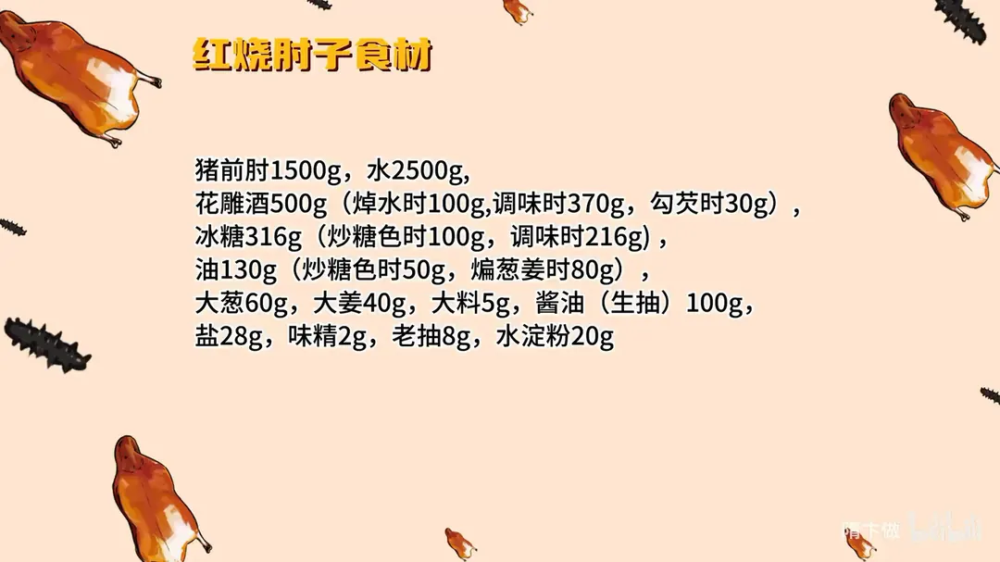
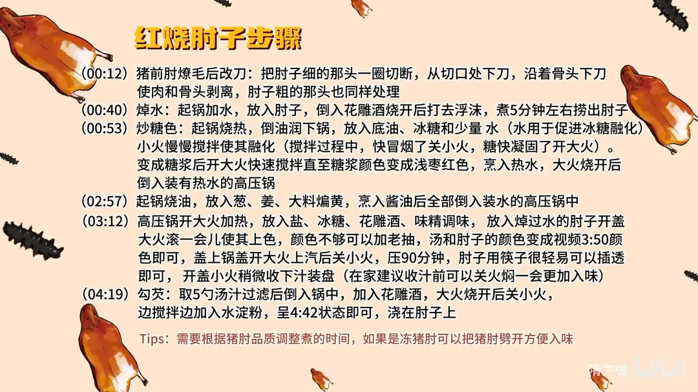

红烧肘子
隋卞一做。1.5kg 猪前肘燎毛后沿骨剔开，冷水焯 5 分钟；冰糖 316g 分两次用，100g 炒糖色、216g 调味，花雕酒 500g 也分焯水、调味、勾芡三次下，高压锅上汽后小火压 90 分钟，最后取 5 勺汤汁勾芡浇在肘子上。
原视频：https://www.bilibili.com/video/BV1mi421U7Av
食材
猪前肘、水 等 13 样
| 类别 | 用料 | 用量 |
|---|---|---|
| 主料 | 猪前肘 | 1500g |
| 主料 | 水 | 2500g |
| 调料 | 花雕酒 | 500g（焯水 100g、调味 370g、勾芡 30g） |
| 调料 | 冰糖 | 316g（炒糖色 100g、调味 216g） |
| 调料 | 油 | 130g（炒糖色 50g、煸葱姜 80g） |
| 配料 | 大葱 | 60g |
| 配料 | 大姜 | 40g |
| 配料 | 大料 | 5g |
| 调料 | 酱油（生抽） | 100g |
| 调料 | 盐 | 28g |
| 调料 | 味精 | 2g |
| 调料 | 老抽 | 8g |
| 调料 | 水淀粉 | 20g |
步骤
- 改刀：猪前肘燎毛后改刀，把肘子细的那头一圈切断，从切口处下刀，沿着骨下刀使肉和骨头剥离，肘子粗的那头也同样处理。
- 焯水：起锅加 2500g 水，放入肘子，倒入 100g 花雕酒烧开，打去浮沫，煮 5 分钟左右捞出肘子。
- 炒糖色：起锅烧热，倒油润一下锅，放入 50g 底油、100g 冰糖和少量水（水用来促进冰糖融化），小火慢慢搅拌使其融化；搅拌中快冒烟了关小火，糖快凝固了再开大火。变成糖浆后开大火快速搅拌，直到糖浆颜色变成浅枣红色，烹入热水，大火烧开后倒入装有热水的高压锅。
- 煸葱姜：起锅烧 80g 油，放入 60g 大葱、40g 大姜、5g 大料煸黄，烹入 100g 酱油后全部倒入装水的高压锅中。
- 压肘子：高压锅大火加热，放入 28g 盐、216g 冰糖、370g 花雕酒、2g 味精调味；放入焯过水的肘子，开盖大火滚一会儿使其上色，颜色不够可以加 8g 老抽，汤和肘子的颜色到位后盖上锅盖，大火上汽后关小火压 90 分钟。筷子能很容易插透即可，开盖小火稍微收一下汁装盘。
- 勾芡：取 5 勺汤汁过滤后倒入锅中，加入 30g 花雕酒，大火烧开后关小火，边搅拌边加入 20g 水淀粉，呈稠糊状即可，浇在肘子上。
小贴士
- 煮的时间要看猪肘品质调整；如果是冻猪肘，可以把猪肘劈开，更方便入味。
- 在家收汁前可以先关火焖一会儿，会更入味。
讲解要点
难度：★★★☆☆（难点是贴着骨头改刀和炒糖色，糖色过一分就发苦）
为什么这么做
- 用猪前肘、先燎毛：前肘肉厚、筋多、胶质足，燎毛能去净皮上的毛根和腥味。
- 贴着骨头把两头切开：整只肘子包着骨，中间进不了味；两头开口后汤汁从里外同时渗进去。
- 炒糖色先润锅、加少量水：糖黏，润锅防粘锅边；少量水让冰糖先化开，受热均匀不容易糊。
- 糖色到浅枣红就烹热水：再深就发苦；必须用热水，凉水碰到滚烫的糖浆会炸开溅油。
- 糖量给得足：糖色炒到红色会回一点苦，糖既遮苦又定住甜咸口，这是这道淮扬菜的底味。
- 先开盖滚上色、再盖盖上汽：盖早了色定不住；开盖滚到汤和肘子的颜色都对上，不够再补老抽。
- 压完关火焖、勾芡时再补一遍花雕：焖让味慢慢往肉里渗；花雕焯水去腥、调味补酒香、勾芡再提一次香。
容易翻车
- 糖色炒过头，颜色发黑，整锅汁都带苦味。
- 烹糖色时用凉水，糖浆爆溅烫手。
- 盖盖太早，肘子颜色上不去，成品发白发浅。
- 汁没收浓就勾芡，芡会澥；芡太稠又糊在肘子上。
热评补充
- 有评论说「加两遍酒是大酒店的秘方」：这道菜其实下了三遍花雕——焯水去腥、调味补酒香、勾芡提香，家里照着这个顺序放，酒香才有层次。
原片尾卡


原片文案
AI 字幕校准稿
每天私信里边都是这个想吃那个肉、那个想吃那个肉的。吃肉最爽的还得是肘子——红烧肘子，一道淮扬菜。
准备一个猪前肘，表面的毛给燎干净。改下刀，把上面那圈给它切断，这刀贴着里边的骨头，能往里边伸多深就伸多深，慢慢地转，然后锯切；下边也同样，要把肉跟骨头剥离。整个炖，这一包着它中间不好入味，这样两边都有口了，入味就入得比较快。
把切好的肘子焯下水，里边加点料酒。烧开之后把边上的沫子撇一下，锅里咕噜咕噜地煮个三五分钟，把肘子捞出来。
炒糖色。把锅烧热，拿油润一下——因为炒糖比较黏，容易沾到四边，拿油润一下就没有了。放点底油，把冰糖放进去，适当地可以加点水，加水的作用是促进冰糖融化。这火可以关小火，你看糖扒拉扒拉要凝固了就赶紧开大火，让糖融化；火太大的时候咕嘟咕嘟这样了，就关小火，看它边上冒烟了关小火，快凝固了就开大火。现在糖浆的颜色属于浅黄色，里边没有白颜色了，证明里边没有块了，搅动就可以适当地加点速度。浅枣红色就开始烹入热水，一定要热水，凉水就炸了。
大火烧开，把炒好的糖色倒到高压锅里边。然后我们再煸点葱姜，还有大料。葱姜煸黄了之后，咱们烹一勺酱油，把这倒到锅里边；我们视频里说的酱油就是生抽，这是第三遍在视频里说这事了。里边加入盐、冰糖——因为炒糖色炒到红色的时候会回口有那么一点点苦，要拿这个糖遮一下那个苦味；而且这个菜最后成品的味道也是甜咸味，所以糖的量稍微会大一点。再加入花雕酒，来点味精。
把焯过水的肘子放到这个高压锅里面。肘子放进去之后先别着急盖盖，先让它大火滚一会儿；盖盖儿急了，有可能色就不准，甚至有的时候上不去，看这个色儿会稍微差一点，补点老抽。汤汁补到这个色就没问题了，然后你们再看一下汤的颜色，盖盖，高压锅上气关小火 90 分钟。
时间到了，拿筷子一插，从那头插到那头，很轻易地就插透了。开火稍微收下汁，要拿这汁淋着点。在家里边高压锅压完之后，您其实也甭着急收汁，关火焖一会儿，让那味慢慢慢慢就渗透进去。
装盘了，咱们勾个芡。锅里的汁逼出点来，汤汁里边再加点花雕酒——加第一遍是为了去腥，第二遍是补那个酒香。大火把汤汁烧开之后关小火，边下边搅动，汁儿还有点透明的状态就是了，浇在肘子上。
来吧兄弟。我知道那个咸甜口是什么意思了——甜咸口。你感觉哪一个少一点点，或者再多一点点，都是不太行的，他们两个的比例特别特别的合适。然后那个油脂的香、肉的香和花雕酒的香，一吃就能感觉到他是淮扬菜了。
而且那个肥肉一进嘴，出溜一下化了，你要不用牙给它拦着，它直接就进到嗓子眼了。炖得超级超级烂，这一口估计就能下一整碗饭，它甜咸口特别特别下饭。